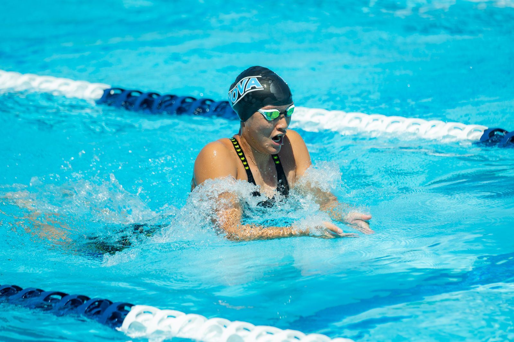
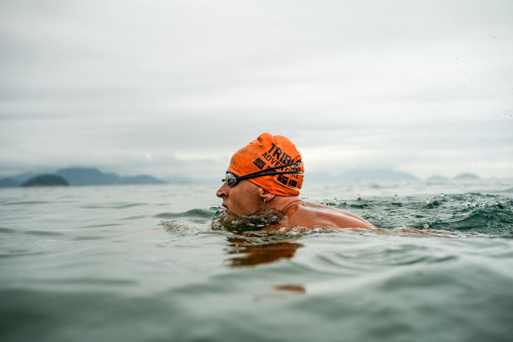
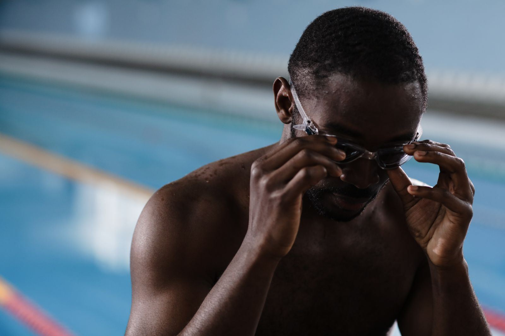
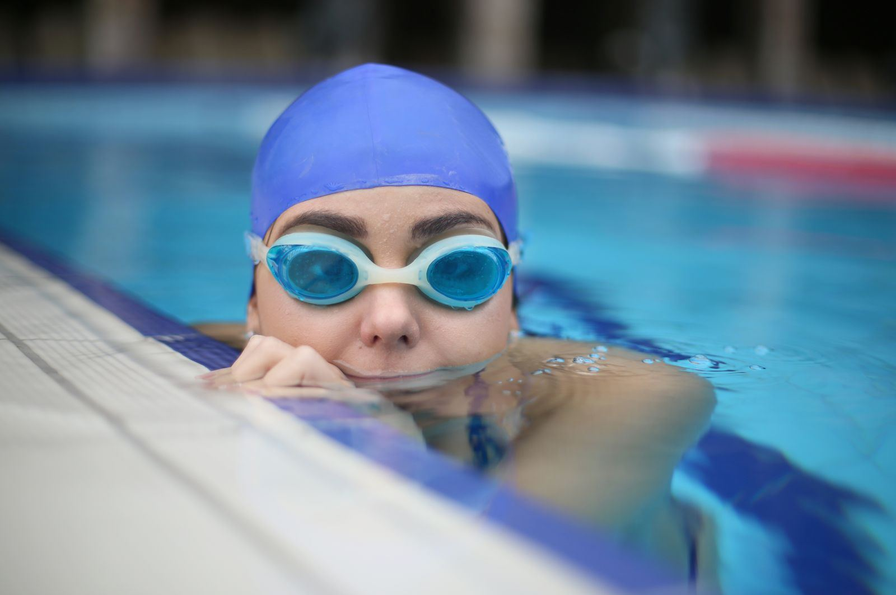
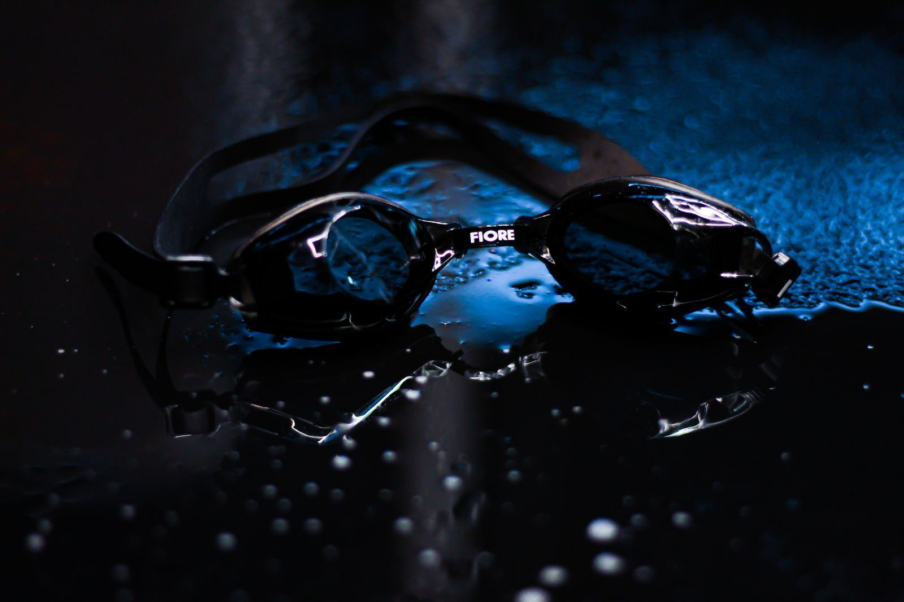

10 次课训练计划
每周 2–3 次、每次 45–60 分钟，10 次课是一个闭环。每张卡片都写清四件事： 这次练什么、练多久、做到什么算过、最容易错在哪。右上角可以打卡，全景图会同步。
01LESSON
熟悉水性
阶段 0
目标：脸埋水吐气 10 秒 · 水中行走 25 米不扶边
本次内容
- 扶边行走、水中行走各 2 趟（水深到腰）
- 陆上呼吸模仿 20 次 → 水中憋气、吐气 10 组
- 抱膝浮体 5 次，感受水的浮力
达标线
02LESSON
漂浮与站立
阶段 1
目标：俯漂 10–30 秒 × 5 组，并且能自己站起
本次内容
- 扶边俯漂 → 离边俯漂 5 秒起
- 超人漂（双臂夹耳）3 组 × 10 秒
- 站起三步：收膝 → 脚掌踩底 → 抬头
达标线
03LESSON
蛙泳腿：收 · 翻 · 蹬 · 夹
阶段 2
目标：能做出「翻脚」，扶板蹬腿 8–10 米
本次内容
- 陆上「收—翻—蹬—夹」模仿 50 次
- 坐池边翻脚掌，保持 3 秒 × 10
- 扶边单腿分解 → 扶板蹬腿 8 米 × 4
达标线
04LESSON
蛙泳腿巩固
阶段 2
目标：扶板连续 15 米，每蹬一次滑 2 秒
本次内容
- 蹬壁滑行 + 连续蛙泳腿
- 扶板 15 米 × 4 组，组间休息 45 秒
- 数「蹬—停」次数，而不是数距离
达标线
05LESSON
划手与呼吸
阶段 3
目标：划手抬头吸、伸手低头吐，连续 10 次不呛
本次内容
- 陆上划手三步模仿：外划 → 收手 → 前伸
- 站立水中划手 + 呼吸 20 次
- 扶边划手呼吸 → 划手 + 一次蹬腿
达标线
06LESSON
手腿配合顺序
阶段 4
目标：做出「划手腿不动，收手再收腿」的正确顺序
本次内容
- 下水前默念口诀 3 遍
- 分解配合 10 米 × 4（划手时腿伸直）
- 两次腿一次手的节奏练习
达标线
07LESSON
完整配合 25 米
阶段 4
目标：一次动作一次呼吸，独立游完 25 米
本次内容
- 10 米 × 4 → 15 米 × 3 → 25 米 × 1
- 每次休息到呼吸平稳再开始
- 请同伴录一段侧面视频，只看手臂路线
达标线
08LESSON
动作定型与纠错
阶段 4
目标：25 米动作不变形，划手次数下降
本次内容
- 四项排查：蹬腿无力 / 划手过大 / 抬头过高 / 无滑行
- 每项单独练 8 分钟，其余全部停掉
- 25 米 × 3，记录每趟划手次数
达标线
09LESSON
耐力与 50 米
阶段 5
目标：连续游完 50 米不休息
本次内容
- 25 米 × 2 热身，专注节奏
- 50 米 × 2，中间休息 2 分钟
- 触壁与简易转身，不必练滚翻
达标线
10LESSON
踩水与安全结课
阶段 5
目标：50 米达标 + 深水区踩水 30 秒并靠岸
本次内容
- 蛙式踩水 30 秒 × 3，逐步进入深水区
- 仰漂休息 + 摇橹手
- 50 米计时 1 次，制定下一个 4 周计划
达标线
技术流程：把感觉拆成拍子
动作学不会，通常不是悟性差，而是没人告诉你先动哪、后动哪、动多久。 这一节把蛙泳拆成四拍、一条呼吸时序，以及一张「练错在哪」的对照表。

一个周期，只有四件事
划手 → 收手收腿 → 蹬夹前伸 → 滑行。所有「游得累」，几乎都是把第四拍滑行省掉了。
① 四拍循环流程图
默念口诀下水：划手腿不动，收手再收腿，先伸胳膊后蹬腿，并拢伸直漂一会儿。
-
01
划手≈ 0.40 s
手掌外划到比肩略宽，抬头吸气。腿保持并拢伸直，一动不动。
感觉：用手把水「抱」到胸前，不是往后拍。 -
02
收手 · 收腿≈ 0.35 s
手肘向身体收拢的同时，脚跟向臀部收。此时头开始低下去。
感觉：把脚后跟「塞」到屁股下面。 -
03
蹬夹 · 前伸≈ 0.50 s
脚掌外翻，向后向外画弧再并拢；同时双臂向前伸直。
感觉：用脚掌「推一堵墙」，再夹紧。 -
04
滑行≈ 0.30 s
全身伸直，脸在水里，缓慢吐气。滑到明显减速再开始下一次。
感觉：数「一、二」，让身体自己往前走。
② 呼吸时序：什么时候抬头，抬多久
蛙泳是「一次动作一次呼吸」。抬头只发生在划手的前半段，嘴露出水面约 0.5 秒，其余时间脸都在水里吐气。
一个划水周期的三段时序
1.2–1.5 s四列对应四拍，颜色越深表示该环节正在进行。
③ 一次训练怎么走
每次下水都按同一条流程走，身体会形成「入水即进入状态」的条件反射。
单次训练流程图
50–60 min顺序不要调换：热身在前，复习在旧内容之后、新内容之前。
- 0110′
陆上热身
关节活动 + 走到微微出汗
- 025′
入水适应
浅水行走，脸埋水吐气 10 次
- 0310′
复习上次
只做上一课的达标动作
- 0425′
本次主项
只练一个新动作，分组做
- 055′
组合 + 放松
把新旧串起来，记录感受
④ 常见错误对照表
对照「表现」找自己的问题，只改一条，改完再改下一条。
⑤ 卡住了？照这条流程诊断
先定位症状，再看根因，最后只执行一条处方。三条同时改，身体会退回原来的错误模式。
达标标尺：把「学会」变成可测量
自学最大的问题是没有裁判——不知道自己练到哪了。这里放两把公开的尺子： 一把是能力分级，一把是大众游泳的达标时间。
业余四级（绿海豚）＝ 普通成年人认真练 2–3 个月的现实目标。 它不是天赋线，而是每周下水 2–3 次、按计划练的结果。先盯这一档。
| 等级 | 技能测评项 | 泳姿要求 | 对应本文 |
|---|---|---|---|
| 一级 | 5 米漂浮滑行，途中不抬头换气 | 连续 25 米蛙泳 | 第 5–7 课 |
| 二级 | 水中翻转：俯卧翻成仰卧并保持 10 秒 | 连续 50 米蛙泳 | 第 9 课 |
| 三级 | 水中拾物：头部没入水中完成拾取 | 连续 100 米蛙泳 | 结课后 |
| 四级 | 踩水：头部露出水面连续 15 秒 | 200 米蛙泳 + 25 米爬泳 | 第 10 课 + 进阶 |
依据：GB/T 44098—2024《游泳课程学生运动能力测评规范》。五、六级另含潜泳 15 米与计时要项，入门阶段不必追。
大众游泳锻炼等级 · 成人 50 米蛙泳
| 级别 | 证章 | 男子 50 m | 女子 50 m | 说明 |
|---|---|---|---|---|
| 一级 | 金海豚 | 00:50.00 | 01:10.00 | 接近业余上限，需要系统训练 |
| 二级 | 银海豚 | 00:58.00 | 01:20.00 | 动作效率高，能连续多组 |
| 三级 | 粉海豚 | 01:10.00 | 01:30.00 | 节奏稳定、滑行充分 |
| 四级 | 绿海豚 | 01:30.00 | 01:40.00 | 2–3 个月的现实目标 |
| 五级 | 蓝海豚 | 不限泳姿，02:30 内连续游完 50 米 | 完成本文六阶段即可 | |
依据：《全国游泳锻炼等级标准》（国家体育总局颁布）。实际考核以当地泳馆公布为准。
安全与水中自救
这一节可能永远用不上；但用上的那一次，它决定的是能不能自己走回岸上。 建议在学泳姿之前就先读一遍。

真正危险的不是水，是慌。
慌 → 挣扎 → 呛水 → 耗尽体力，
这才是那条致命的链条。 抽筋时先记住一件事：你能浮起来，慢慢来。
① 抽筋自救流程图
处理顺序永远是：先让自己浮起来，再处理抽筋。顺序反了，越拉越沉。
- 01
立刻停止发力
不要再蹬、不要再划，先别挣扎
- 02
改成仰漂
后脑贴水、双手张开、肺里留气
- 03
判断部位
小腿 / 脚趾 / 手指 / 腹部
- 04
反向拉伸
抓脚尖向身体拉，压膝伸直
- 05
靠岸结束
缓解后慢慢游向岸边，本场不再加量
② 发现有人溺水：岸上四步，绝不下水
真实溺水通常安静、无扑腾。看到有人呆立水中、头后仰、眼神发直，立刻呼叫救生员。
- STEP 1
呼叫
大声喊「有人溺水」，指定一人打 120、一人找救生员
- STEP 2
递物
伸救生杆、竹竿、毛巾。趴低身体，避免被拉下水
- STEP 3
抛掷
抛救生圈、浮板、空水桶，让对方抱住再往岸边拖
- STEP 4
上岸后
无呼吸立即 CPR 并取 AED。不要控水、不要倒挂
③ 抽筋处理对照表
| 部位 | 立即动作 | 持续 | 之后怎么办 |
|---|---|---|---|
| 小腿 | 一手抓脚尖向身体拉，另一手压膝盖让腿伸直 | 15–20 秒 | 改仰漂休息，缓慢蹬腿确认缓解 |
| 脚趾 | 用手扳住脚趾，向小腿方向拉开 | 10–15 秒 | 轻活动踝关节，不要立刻发力蹬水 |
| 手指 | 反复握拳、张开，甩动手腕 | 5–6 次 | 改仰泳或蛙泳，减少抓水发力 |
| 腹部 | 仰漂、双腿伸展，缓慢深呼吸 | 至缓解 | 就近靠岸休息，本场结束 |
④ 踩水：比「会游 50 米」更重要
踩水的本质不是「保持不动」，而是用手掌持续制造向下的支撑。四种方式，从最省力到最灵活。
最省力、最推荐先学。双腿做小幅蛙泳腿，手掌在体前「按压」，节奏慢而稳。
双腿交替前后剪动，像走路。适合长时间停留，需要一点平衡感。
手掌在水下画横向的「8」字，靠手掌角度变化产生升力。这是所有踩水的核心手感。
不是踩水，但更重要：后脑贴水、双臂张开、肺里留气。体力耗尽时它能救你一命。
装备：只需要五样
装备的作用是降低入门阻力，不是提升成绩。前期不需要脚蹼、划手掌、呼吸管，那些是进阶工具。

泳镜
选带硅胶垫圈、可调鼻桥的款式。能看清池底，才敢把头低下去。

泳帽
硅胶帽不勒头、减少阻力，也保护头发不被氯损伤。

浮板 + 背漂
浮板练腿、背漂找身体位置。第 1–4 课的主力工具。
| 装备 | 怎么选 | 什么时候用 |
|---|---|---|
| 泳镜 | 垫圈柔软、不漏水；近视可选带度数款（比日常低 50 度） | 全程 |
| 泳帽 | 硅胶优于布帽；长发选加大款 | 全程 |
| 浮板 | A 字板或方板皆可，硬度适中 | 第 3–5 课练腿 |
| 背漂 | 可拆片式，方便逐片减少 | 第 2–6 课找平衡 |
| 耳塞 / 鼻夹 | 非必需。鼻夹长期用会妨碍吐气练习 | 仅耳道敏感者 |
结课自检：12 项都会，才算真的会
勾选会保存在本机，下次打开还在。少于 10 项，说明还有一课没过——回到全景图找对应阶段。